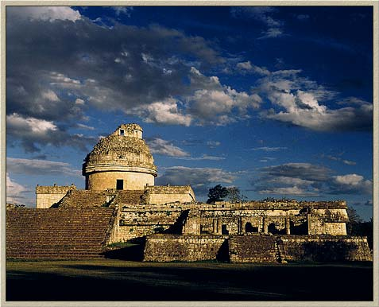
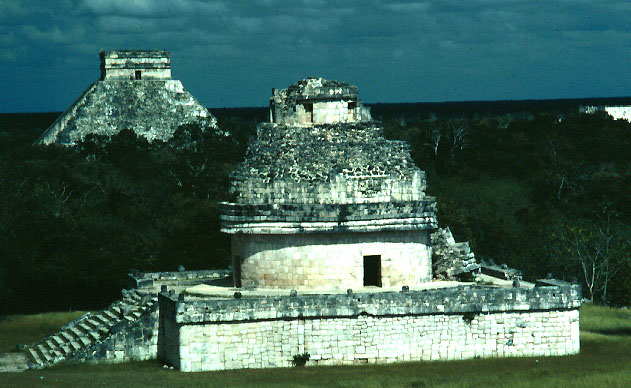
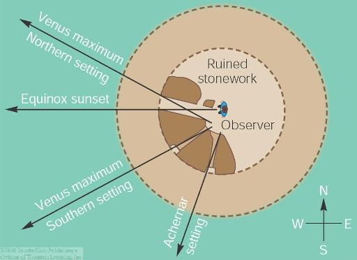

ASTR 121 (O'Connell) Supplement
EL CARACOL: A MAYA OBSERVATORY
"El Caracol" (or the "snail," named for its
internal winding staircase) is one of the most prominent buildings at
Chichen Itza, the major Maya city in the northern Yucatan. There is
good archaeological evidence that it was used as an observatory, using
internal wall and window alignments to mark the motions of the Sun and
Venus in the sky.

El Caracol. The round tower is built on the roof of a
larger low-rise building.
(Image from A Tour
of Chichen Itza by J. Perez de Lara.)

Another view, with the Kukulcan Pyramid in the
background (image by J. Q. Jacobs)

Astronomical alignments in El Caracol
(drawing from M. Seeds' textbook)
Text copyright © 2004-2015 Robert W. O'Connell.
All rights reserved. These notes are intended for the private,
noncommercial use of students enrolled in Astronomy 121 at the
University of Virginia.
 Back to Guide 5
Back to Guide 5